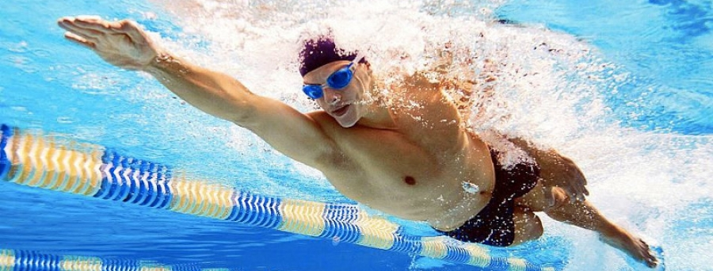

Guide To Swimming
Benefits of Sports
Playing sports helps you in so many ways, for example it helps you stay in shape, teaches you how to organize your time, boosts friendships, reduces stress, improves your health and much more. Through athletics, you gain many skills that can best be acquired in your life. A very great example of a sport is swimming.
Introduction To Swimming
Swimming is an individual or team sport that requires the use of one's arms and legs to move the body through water. Competitive swimming is one of the most popular Olympic sports, with varied distance events in butterfly, backstroke, breaststroke, freestyle, and individual medley.
- Breaststroke: Breaststroke is a swimming stroke on the chest while the torso does not rotate. It is the most popular recreational style due to the swimmer's head being out of the water a large portion of the time, and that it can be swum comfortably at slow speeds only if not during practice or competitions.
- Butterfly: The butterfly is a swimming stroke that is swum on the chest, with both arms moving symmetrically while forming the butterfly kick. Butterfly is the newest swimming style swum in competition, first swum in 1933 and originating out of breaststroke.
- Backstroke: The backstroke is the swimming stroke that is swum on the back. Backstroke is one of the four swimming styles used in competitive events regulated by FINA, and the only one of these styles swum on the back. This swimming style has the advantage of easy breathing, but the disadvantage of swimmers not being able to see where they are going.

- Freestyle: The freestyle stroke, also known as front crawl, is the fastest and most efficient of the competitive swimming strokes. To swim freestyle, you assume a prone position in the water.